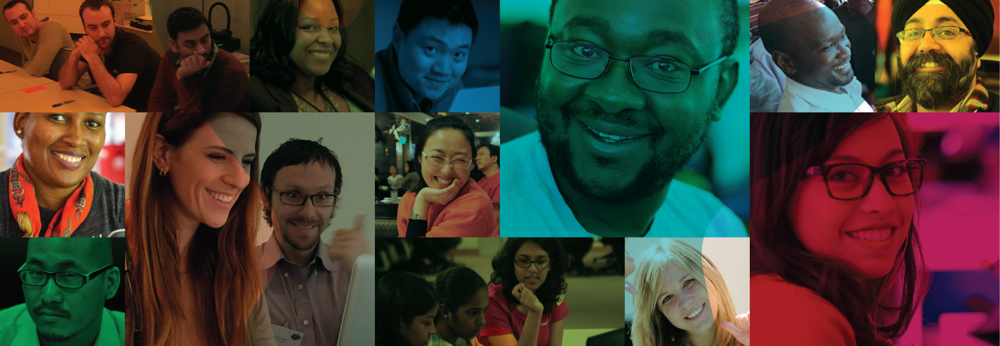
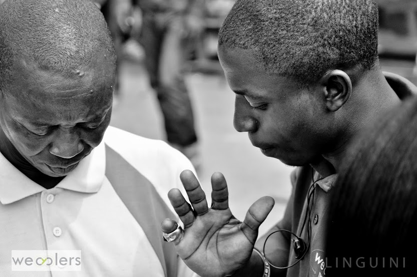
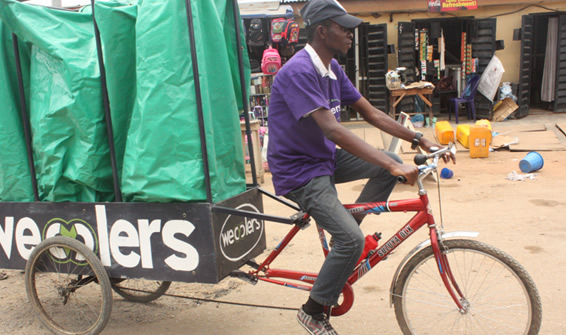

JOIN WECYCLERS
HELP US TURN WASTE TO WEALTH
We are hard at work on our journey to become the number one company in collection of recyclables in Nigeria and we need hardworking, passionate and dedicated people to join us.

Application Process
Find a job you like and apply for it by sending your CV to jobs@wecyclers.com. We will take a look at your application and get back to you if we’d like to set up a meeting with you.
Positions Available:
Wecyclers Fellow Program:
The Wecyclers Fellow program is looking for driven and entrepreneurial people to take on the challenge of building the Wecyclers Business founded in 2012. Wecyclers tackles the intractable problem of waste management in Africa’s urban areas.
Wecyclers gives households a chance to capture value from their waste while providing a reliable supply of materials to the local recycling industry. Wecyclers works in partnership with the Lagos Waste Management Authority (LAWMA) and collects recyclable waste, including plastic bottles, plastic bags, and aluminum cans, at the household level using low-cost bicycle-powered collection vehicles called “wecycles”.
The Wecycler Fellow will have the opportunity to join us in our ambitious mission to clean up Lagos streets and eventually other urban centers. The fellow will be based in Lagos and must have the desire and energy to spend atleast 1year in Lagos. We will provide a basic stipend, which will cover lunch and expenses and can provide support with accommodation.
The fellow will help define the project they work on; however, we currently have the greatest need in:
- Consulting: helping us structure our consulting program for leading organizations.
- Marketing Strategy: Building a marketing strategy for selling our collection services to 3 groups of organizations:
- Estates,
- Schools and
- Corporations.
- Thought leadership: Figure out how to turn our household collection data into meaningful insights about our waste and waste management in Lagos.
For the Wecycler Fellow, we are looking for the following qualities:
- Tenacity
- Social consciousness
- Analytical Skills
- A collaborative mentality
- Patience, humility and empathy
- A passion for the working in the developing context
- Powerful communication skills
To apply for the Wecyclers Fellow Program please send your resume and a cover letter to jobs@wecyclers.com with subject “Wecyclers Fellow Program – Your Name”
Manager Trainee:
Wecyclers is seeking the services of young, dynamic and active people to fill the position of manager trainee.
Successful participants in the training program will have the opportunity to manage one of our hubs. Interested candidates should possess an OND certificate or its equivalent.
Wecycler:
Carries out collection and transportation of recyclable material from households on specially constructed cargo tricycles. People applying for this position need to have an outgoing personality and have the ability to work well under pressure.
This position comes with an attractive welfare package.
Interested candidates should possess an SSCE certificate or its equivalent. Successful wecyclers will have an opportunity to be considered for support in entering our manager trainee program.
